SHOWKOT HOSEN

XAI in Cybersecurity Enthusiast and ML Based Cyber Attack and Defence system Creator
ISC2 CC Pass | Cisco Ethical Hacker | R&D Focus
ABOUT ME
My journey into Engineering began with a rigorous focus on algorithmic problem-solving, where I built a strong foundation in C and C++ by solving over 65+ challenges on HackerRank. This early technical discipline evolved into a deep curiosity for IoT, embedded system, Cybersecurity, leading me to master the fundamentals of Networking, Packet Tracing, and Linux Bash through the Cisco ecosystem. While navigating the complexities of early engineering, I made a strategic pivot in my third year to align my academic performance with my professional ambitions. This resulted in a significant CGPA boost, achieved while simultaneously earning the Cisco Ethical Hacker credential and developing proficiency in Python for Machine Learning. My transition into research was marked by the publication of my first co-authored paper on CNN-based satellite image classification, which laid the groundwork for my subsequent work. As a lead researcher, I have since published two additional papers as first author, focusing on the intersection of Deep Learning and security. Having recently earned the ISC2 Certified in Cybersecurity (CC) designation, I am currently specializing in Explainable AI (XAI) and LLMs for my thesis. I am driven by the goal of bridging the gap between automated security and human interpretability, and I am now seeking a PhD opportunity to develop the next generation of transparent, AI-driven defense systems.
EDUCATION
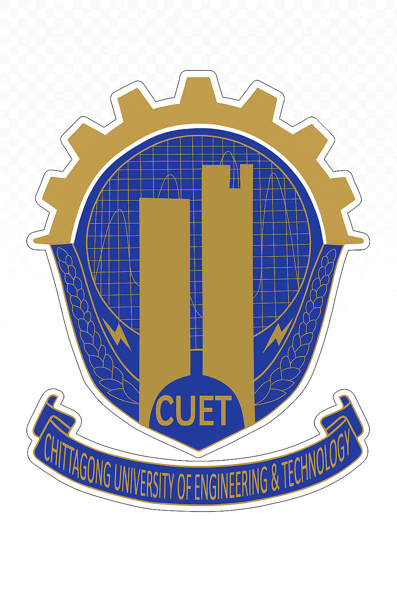
MSc in Electronics and Telecommunication Engineering
Chittagong University of Engineering and Technology (CUET)
2026 – Present | AI/ML in Cybersecurity Currently studying
BSc in Electronics and Telecommunication Engineering
Chittagong University of Engineering and Technology (CUET)
2022 – 2026
BSc Drive LinkHSC in Science
Government City College, Chittagong
2018 – 2020
SKILLS SUMMARY
Hover (or tap) a skill to see the credentials that back it up
EXPERIENCES
Adjunct Lecturer
Department of Electronic and Telecommunication Engineering (ETE)
International Islamic University Chittagong (IIUC)
2026 – Present Currently working
Conducting lectures, practical lab sessions, and mentoring undergraduate students in electronics and telecommunication engineering topics.
Cybersecurity Research Student
CUET
Hands-on research on IDS/IPS and ML-based cyber defense systems. Participation in national CTF competitions and OSINT investigations.
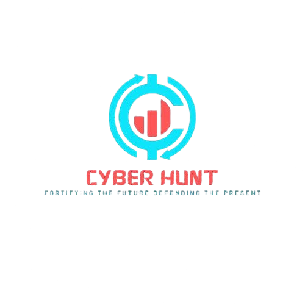
Cyberhunt - Cybersecurity Mentorship Lead
CUET | 2025 – Present Currently active
Mentoring junior students in the fields of Cybersecurity and Machine Learning research. Organizing workshops on ethical hacking foundations.
Industrial Visit - BSCL
Focused on satellite communication infrastructure, signal monitoring, and ground station security protocols.

Industrial Attachment - DigidenIT
Focused on ASP.NET based simple dental clinic services app development with backend and frontend integrated.
PUBLICATIONS
My research focus lies at the intersection of Machine Learning and Cybersecurity, with a particular emphasis on Explainable AI (XAI).
Journals (yet to be submitted)
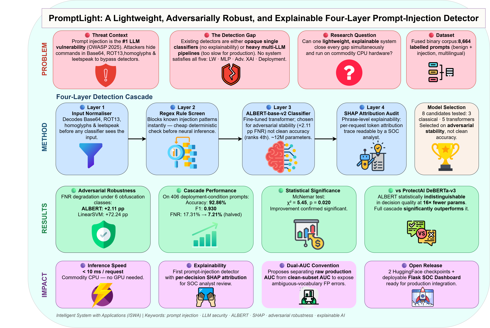
PromptLight: Lightweight Prompt Injection Detection Manuscript Ready
Manuscript Ready for Submission
Author: Showkot Hosen, with supervisors Professor Dr. Md. Azad Hossain and Md. Farhad Hossain
An ALBERT-base-v2-powered prompt injection detection system for securing LLM applications.
Read Abstract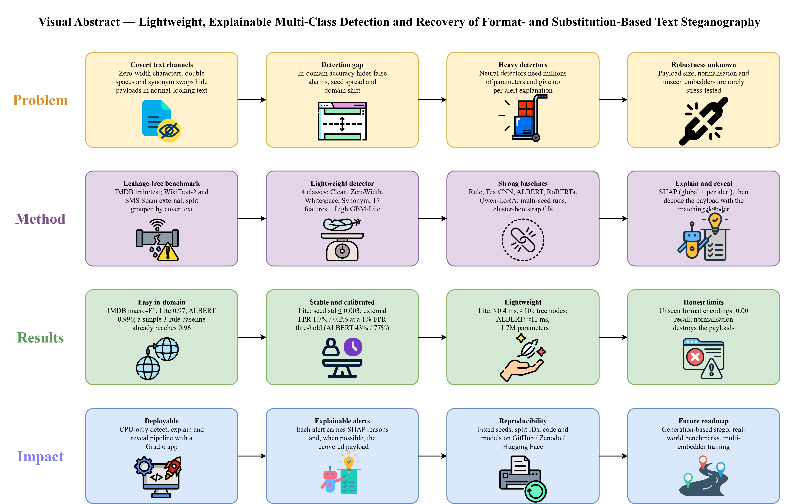
Lightweight and Explainable Multi-Class Detection and Recovery of Format- and Substitution-Based Text Steganography: A Leakage-Free Benchmark Under Domain Shift Manuscript Ready
Manuscript Ready for Submission
Author: Showkot Hosen and Professor Dr. Md. Azad Hossain
A 17-feature LightGBM-Lite detector (0.39 ms per text on CPU) for four-class text steganography, benchmarked leakage-free against ALBERT, RoBERTa, TextCNN and Qwen2.5-0.5B under domain shift, with SHAP reasons and payload recovery for every alert.
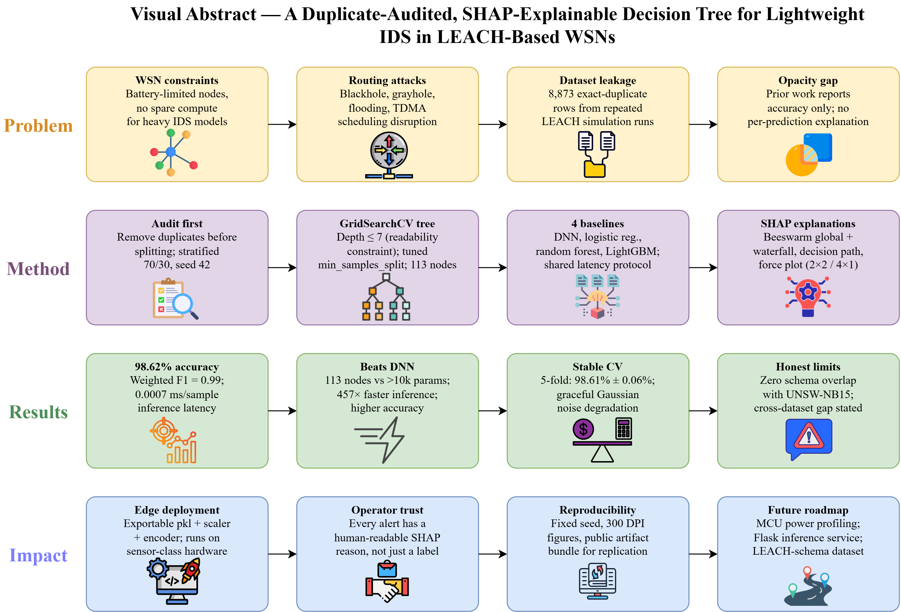
WSN-IDS: A Duplicate-Audited, SHAP-Explainable Decision Tree for Lightweight Intrusion Detection Manuscript Ready
Manuscript Ready for Submission
Author: Showkot Hosen and Professor Dr. Md. Azad Hossain
A GridSearchCV-tuned Decision Tree IDS for LEACH-based WSNs with full SHAP explainability, duplicate-row auditing, and honest stability analysis on WSN-DS.
Conferences
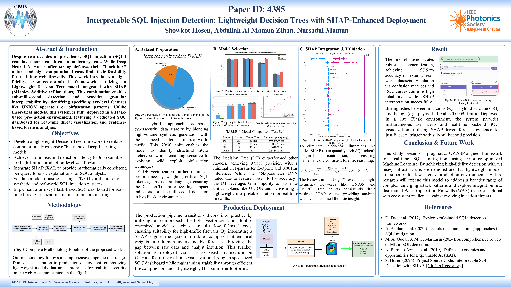
Interpretable SQL Injection Detection: Lightweight Decision Trees with SHAP-Enhanced Deployment
2026 IEEE 2nd International Conference on QPAIN
Author: Showkot Hosen, Abdulah Al Mamun Zihan and Nursadul Mamun

XAI-Powered Vision: Making CNN Malware Classifier Transparent for Cybersecurity
2026 IEEE 2nd International Conference on QPAIN
Author: Showkot Hosen, Turja Talukder and Md. Azad Hossain
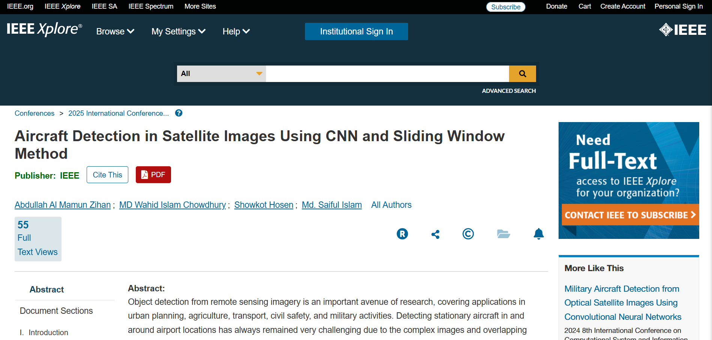
Aircraft Detection in Satellite Images Using CNN and Sliding Window Method
2025 International Conference on ECCE
Author: Abdullah Al Mamun Zihan, MD Wahid Islam Chowdhury, Showkot Hosen and Md. Saiful Islam
IEEE Xplore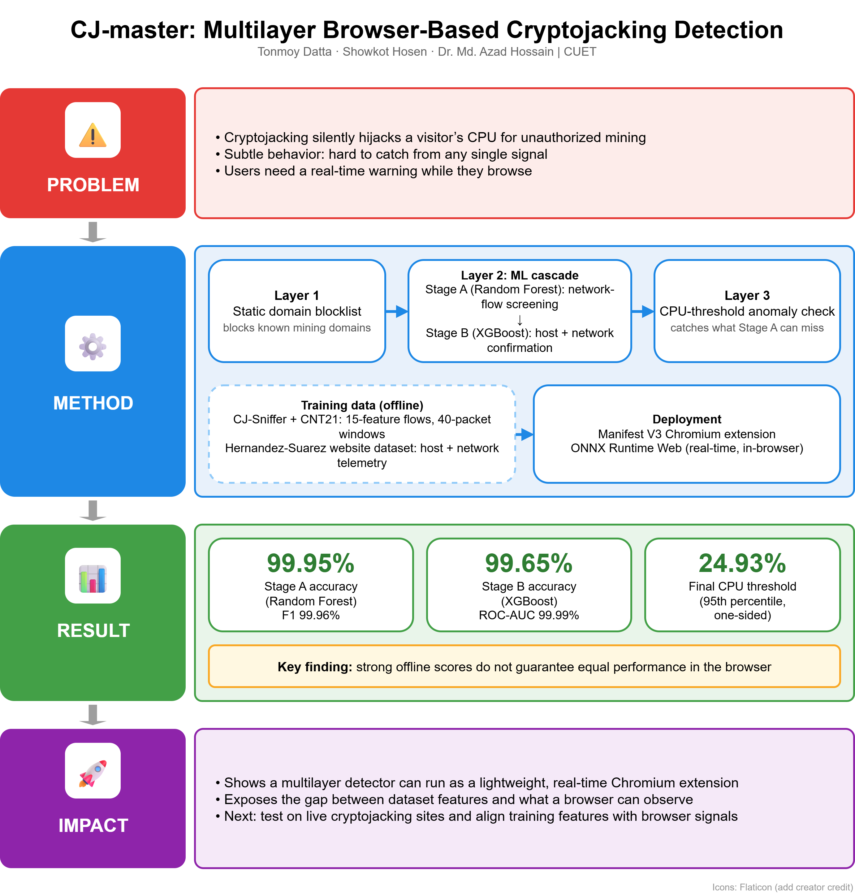
CJ-master: A Multilayer Browser-Based Cryptojacking Detection Framework with Real-Time Chromium Extension Deployment
Submitted to ECCE 2027 (under review)
Author: Tonmoy Datta, Showkot Hosen and Dr. Md. Azad Hossain
Under Review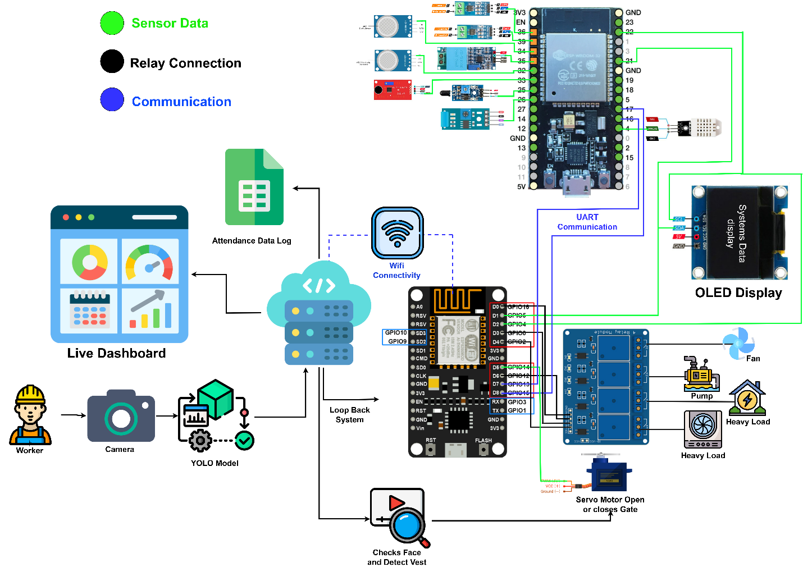
SentriX: Edge AI-Powered Industrial Worker Safety Monitoring and Intelligent Gate Access System
Submitted to ECCE 2027 (under review)
Author: Abdullah Al Mamun Zihan, Showkot Hosen, Prangon Sarker Intu, Saidur Rahman Riad and Taeba Taher
Under ReviewACADEMIC SERVICE

Invited Reviewer (2026)
Cyber Security and Applications (Elsevier)
Invited by the editorial board to serve as a peer reviewer for manuscripts submitted to the journal.
View Certificate
Reviewer Panel Member (2026)
HKIE Transactions – The Hong Kong Institution of Engineers
Added to the journal’s reviewer panel and invited to review manuscripts within my area of expertise.
View RecognitionKEY CERTIFICATIONS
My learning path, from foundations to real-world applications. Click any certificate to open it.
PROJECTS

Sentrix: Smart Industrial Safety
Industrial IoT and vision framework utilizing ESP32, ESP8266, and YOLO object detection for real-time safety monitoring, facial recognition, and automated hazard controls.

SEC-IoT: Industrial Monitoring
IoT monitoring platform featuring connected environmental sensors and a web dashboard equipped with Role-Based Access Control (RBAC) for Admin and User management.

IoT Military Monitoring System
Multi-sensor system with ESP-12, Arduino, RFID access control, pulse sensors, and environmental safety detection for military camps and soldier health tracking.

Logic Gate Home Automation
Hardware logic-circuit automation system integrating PIR, LDR, and MQ5 gas sensors with AND/NAND gate ICs to automate home safety and power efficiency.

Infrared Data Transfer System
Hardware-based short-range wireless communication system using IR transceivers to modulate and demodulate digital signals without Wi-Fi or Bluetooth.

MLWAF: ML Powered WAF
Web Application Firewall leveraging Deep Learning and TF-IDF vectorization to classify SQL Injection and XSS payloads beyond traditional regex rules.

Text Steganography Detection
Covert data defense mechanism detecting hidden messages in digital text via deep learning, analyzing character spacing and LSB synonymous substitutions.

Chrome Extension Sandbox Analysis
Static and dynamic analysis platform using sandboxing to inspect extension API calls, web requests, and manifest vulnerabilities to stop data exfiltration.

Quranic Shots E-Commerce Platform
Full-stack web platform built using PHP and JavaScript for digital asset distribution, secure user authentication, and digital media access.
COMMUNITY CONTRIBUTION
I am passionate about sharing knowledge and mentoring. Below are two of my strategic GitHub roadmaps for the community:
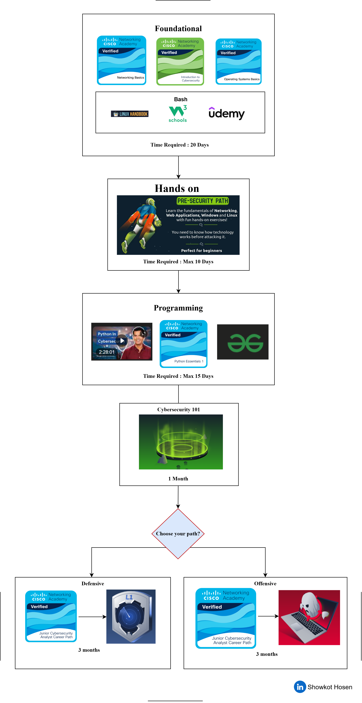
Complete Cybersecurity Roadmap
A strategic guide designed for beginners to build solid foundations in networking, ethical hacking, and system security.
GitHub Resource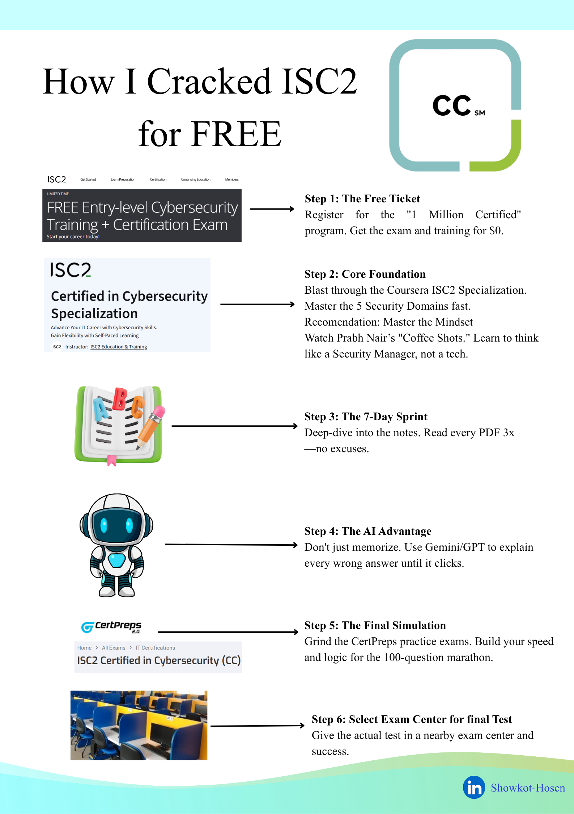
(ISC)² CC Preparation Roadmap
Leveraging my status as an (ISC)² Certified professional, I developed this guide to help peers master "Security Principles" and "Incident Response".
GitHub ResourceCO-CURRICULAR ACTIVITIES
Organizer of Televerse 1.0
Organized and managed a cybersecurity-focused Capture The Flag (CTF) competition at CUET. Led the technical team and defensive security concepts, coordinating logistics for national-level participation.
Competitions & Participation
- Machine Learning: BUET DL Sprint 4.0
- Capture The Flag: BCS CTF and UAP CTF
- Case Competition: Face The Case 2.0 | CUET, Semifinalist
AWARDS
Phoenix Summit 2026 Fellowship
Selected as a fellowship recipient, sponsored by Flexoptix, for the Phoenix Summit 2026 held in Dhaka (June 23–27). Completed hands-on DevSecOps training covering Docker, Trivy, and kube-bench for container security; Harbor as a secure artifact registry; and supply chain security concepts including SBOM, SCA, Cosign, Kyverno, and SLSA and joined 2 days cybersecurity biggest event in Bangladesh.
Let's Connect
Open for research collaborations in the field of AI/ML in cybersecurity.